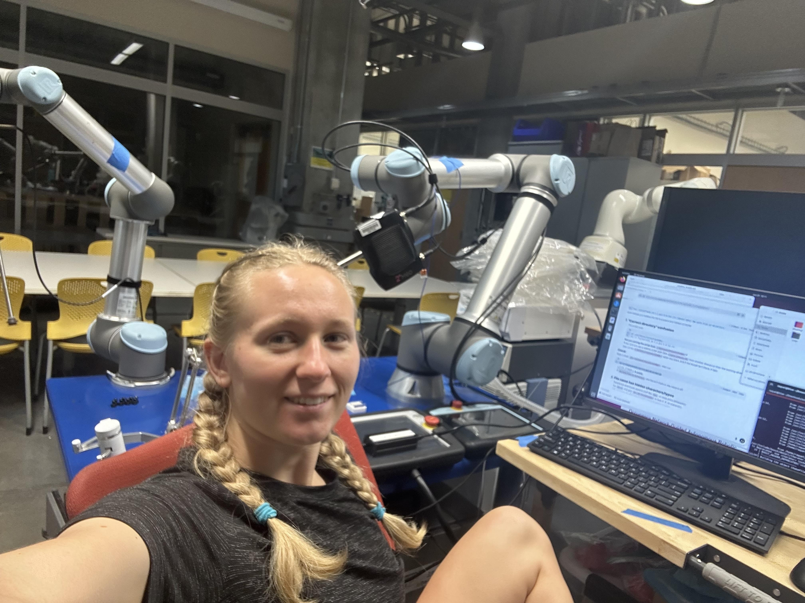

Johns Hopkins University | Laboratory for Computational Sensing and Robotics (LCSR)
I developed a ROS 2 teleoperation system that lets an operator control a UR5 robotic arm with Force Dimension haptic devices. It was designed to collect high-precision demonstration data for imitation learning in partial nephrectomy procedures, using Universal Robots arms and high-precision Zivid cameras.

The full implementation of the teleoperation nodes and data recorder is in the JHU_Teleop repository on GitHub.
I was terrified going into this experience. Johns Hopkins was one of those names I'd heard my whole life, and spending a summer there left me with a serious case of imposter syndrome. I convinced myself there was no way I belonged, no way I was smart enough to keep up. So I stayed quiet. I tackled the vocabulary of biomedical and surgical terminology on my own, buried myself in research papers, and avoided asking questions I was afraid would expose what I didn't know.
That fear turned out to be the real obstacle, not my ability. When progress on my project stalled, I realized I was the one blocking it. My insecurities were keeping me from getting the help I needed to move forward. Everyone in the lab was, in reality, warm, welcoming, and genuinely excited to talk about their work. The intimidation had been almost entirely in my head.
Once I let that go and started asking questions, everything changed. My project picked back up, and so did my confidence outside of it. I started spending time with the grad students, playing squash, going to the gym, building relationships instead of simply showing up to work. That summer taught me that the biggest obstacle to my growth is rarely the material or the people around me. It's the voice in my own head telling me I don't belong. I carry that lesson with me now, and I try to push past that voice every time it shows up, so I never let my own insecurity cost me an opportunity again.